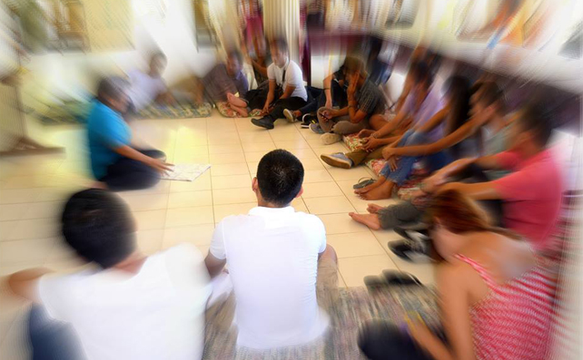

Who is the MAAAI?
The Mindanao AIDS Advocate Association Incorporated or MAAAI is an organization run by the Global Fund and has PLHIVs as members.
MAAAI was formed because of the increasing number of HIV cases in Mindanao. According to estimates, 10 to 15 local residents get HIV per month.
“We can’t wait for the worst to happen before we take action,” Mel Borda, the assistant secretary of MAAAI states.
This organization aims to serve those who are affected with HIV/AIDS and empower them to help empower other PLHIVs.
This organization was founded on May 09, 2009 with 16 founding members, all of which have experienced HIV/AIDS. Concerns about
HIV-related illnesses and staff deaths have an impact on a company by boosting expenditures and decreasing revenues. Increased costs are incurred for health insurance,
funeral expenses, and the training and hiring of replacement workers. It has been demonstrated that HIV culture has both good and negative
effects on health behavior.

Vision and Mission
Mindanao AIDS Advocates Inc. commits itself to
(a) Prevent Sexually Transmitted Infection (STI), HIV and AIDS in Mindanao
(b) Empower PLHIV to respond STI, HIV and AIDS issues and concerns in the community and
(c) Strengthen the relationship between service providers and PLHIV in Mindanao. Mindanao AIDS Advocates Inc. envisions a dignified,
improve and sustainable quality of life for PLHIV
MAAAI is an Aids Advocate Association ran by the Global fund founded on May 9, 2009. The institute was formed because of the rising cases of HIV/Aids, as people from different
backgrounds and ages get admitted to the institution to get the institute's services such as HIV testing and counseling, STI treatment and management,etc.
The institute’s goal is to raise awareness for HIV/Aids as well as assist in preventing the spread of Sexually transmitted Infections, and HIV/Aids in Mindanao.
About the Web Designer
Marianna Ysabel B. Guiang, or as preferably called Ysa, is a web designer, and a student in the Ateneo de Davao University. She is a responsible student who is
willing to take risks in coding and other points in life. Aside from being a student and a web designer, Ysa has a profound interest in musicians such as Taylor Swift, Louis Tomlinson and Cocteau Twins and she is also an enthusiast of actors
like Oscar Isaac, Elizabeth Olsen and Florence Pugh. If not coding or studying, she listens to music, watches movies, most likely in the Marvel Cinematic Universe, or plays guitar. She currently lives with her parents
and 2 younger siblings.